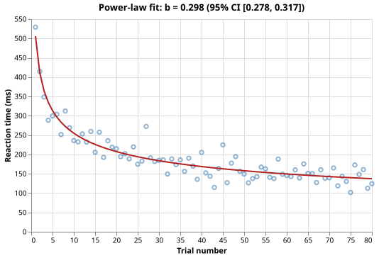

Fitting a Learning Curve to Experimental Data
The Problem
- Practice improves performance: reaction times fall and error rates decrease
- Learning curves quantify how quickly this improvement happens and how much improvement can be expected with more practice
- Our approach:
- Generate 80 per-trial reaction times from a power-law model with added Gaussian noise.
- Fit the model $\text{RT}(n) = A \cdot n^{-b}$ using
scipy.optimize.curve_fit - Extract the learning rate exponent $b$ and compute a 95% confidence interval from the covariance matrix returned by the fitter
- Plot the raw data with the fitted curve overlaid.
Why is a power-law model used for learning curves rather than a linear model?
- Because a power-law always has a lower sum of squared residuals than a line.
- Wrong: which model fits better depends on the data; linear models can outperform power laws when the true relationship is linear.
- Because a power-law captures the empirical observation that early practice
- produces large gains and later practice produces smaller but continuing gains.
- Correct: the power law RT = A * n^(-b) is a convex decreasing function whose slope flattens with increasing n, matching the diminishing-returns pattern observed in motor and cognitive skill learning.
- Because a power-law guarantees that reaction times reach zero at large n.
- Wrong: A * n^(-b) approaches zero asymptotically but never reaches it; real reaction times never fall to zero because every response requires some irreducible motor and cognitive processing time.
- Because power-laws are easier to fit than lines with scipy.
- Wrong: nonlinear fitting is more complex than linear fitting; the power-law is used because it describes the data well, not for computational convenience.
The Power-Law Learning Model
- The model is $\text{RT}(n) = A \cdot n^{-b}$ where:
- $n$ is the trial number (1, 2, ..., N)
- $A$ is the predicted reaction time on trial 1 in milliseconds
- $b > 0$ is the learning rate exponent: larger $b$ means faster improvement
- Taking logarithms gives $\ln \text{RT} = \ln A - b \ln n$, showing that the power law is linear in log-log space
- The parameters $A$ and $b$ are estimated simultaneously by nonlinear least squares rather than log-linearizing, which avoids distorting the noise structure when reaction times have additive Gaussian noise.
Generating Synthetic Trial Data
- The true parameters are $A = 500$ ms and $b = 0.3$, which are within the empirical range for simple motor tasks
- Gaussian noise with standard deviation 20 ms is added to each trial
- Values below 1 ms are clamped to ensure all reaction times are positive
def make_trials(
n_trials=N_TRIALS,
a=TRUE_A,
b=TRUE_B,
noise_sd=NOISE_SD,
seed=SEED,
):
"""Return a Polars DataFrame of per-trial reaction times.
Columns:
trial -- integer trial number starting at 1
rt -- reaction time in milliseconds
Reaction times follow the power-law model RT = a * trial^(-b) with
Gaussian noise of standard deviation noise_sd. Any simulated RT below
1 ms is clamped to 1 ms to ensure all values are positive.
"""
rng = np.random.default_rng(seed)
trials = np.arange(1, n_trials + 1, dtype=float)
rt = a * trials ** (-b) + rng.normal(0.0, noise_sd, n_trials)
rt = np.maximum(rt, 1.0)
return pl.DataFrame({"trial": list(range(1, n_trials + 1)), "rt": rt.tolist()})
Fitting with curve_fit
scipy.optimize.curve_fit(f, x, y, p0)finds the parameter values that minimise $\sum_i (y_i - f(x_i, \theta))^2$ starting from initial guessp0- It returns two objects:
popt: the best-fit parameter vector $(A, b)$pcov: the estimated covariance matrix of the parameters
- The diagonal entry
pcov[1, 1]is the estimated variance of $b$ - Its square root is the standard error $\text{SE}(b)$
def fit_power_law(trials, rt):
"""Fit a power-law learning curve to per-trial reaction-time data.
Parameters
----------
trials : array-like of trial numbers (1, 2, ..., N)
rt : array-like of reaction times in milliseconds
Returns
-------
a : fitted amplitude (predicted RT on trial 1, in ms)
b : fitted learning rate exponent (larger means faster improvement)
b_ci : (lower, upper) 95% confidence interval for b
scipy.optimize.curve_fit minimises the sum of squared residuals and returns
the estimated parameter covariance matrix. The standard error of b is the
square root of the [1, 1] diagonal entry (its variance); multiplying by
CI_Z = 1.96 gives the half-width of the approximate 95% CI.
"""
trials = np.asarray(trials, dtype=float)
rt = np.asarray(rt, dtype=float)
p0 = [rt[0], 0.2]
popt, pcov = curve_fit(power_law, trials, rt, p0=p0, maxfev=5000)
a, b = popt
se_b = float(np.sqrt(pcov[1, 1]))
b_ci = (b - CI_Z * se_b, b + CI_Z * se_b)
return float(a), float(b), b_ci
Confidence Interval from the Covariance Matrix
- The approximate 95% confidence interval for $b$ is:
$$b \pm 1.96 \cdot \text{SE}(b), \qquad \text{SE}(b) = \sqrt{\text{pcov}[1,1]}$$
- The multiplier 1.96 comes from the standard normal distribution: $P(-1.96 < Z < 1.96) = 0.95$.
- This is an asymptotic approximation valid when the sample size is large
relative to the number of parameters
- With 80 trials and 2 parameters it is accurate
Order the steps to fit a power-law learning curve and report a confidence interval for b.
Choose initial parameter guesses p0 = [first RT, 0.2]. Call curve_fit(power_law, trials, rt, p0=p0) to obtain popt and pcov. Extract the fitted exponent: b = popt[1]. Compute the standard error: SE = sqrt(pcov[1, 1]). Form the 95% CI: (b - 1.96 * SE, b + 1.96 * SE).
Visualizing the Fit
def plot_fit(trials, rt, a, b, b_ci, filename):
"""Save a scatter plot of raw data with the fitted power-law curve overlaid."""
trials = np.asarray(trials, dtype=float)
rt = np.asarray(rt, dtype=float)
curve_n = np.arange(1, int(trials.max()) + 1, dtype=float)
curve_rt = power_law(curve_n, a, b)
raw = (
alt.Chart(
alt.Data(
values=[{"trial": int(t), "rt": float(r)} for t, r in zip(trials, rt)]
)
)
.mark_point(color="steelblue", opacity=0.6)
.encode(
x=alt.X("trial:Q", title="Trial number"),
y=alt.Y("rt:Q", title="Reaction time (ms)"),
)
)
fitted = (
alt.Chart(
alt.Data(
values=[
{"trial": float(t), "rt": float(r)}
for t, r in zip(curve_n, curve_rt)
]
)
)
.mark_line(color="firebrick", strokeWidth=2)
.encode(
x="trial:Q",
y="rt:Q",
)
)
chart = (raw + fitted).properties(
title=(f"Power-law fit: b = {b:.3f} (95% CI [{b_ci[0]:.3f}, {b_ci[1]:.3f}])"),
width=480,
height=300,
)
chart.save(filename)

Testing
- Trial count
make_trials()must return exactlyN_TRIALSrows.- All reaction times positive
- Every RT must be positive; values below 1 ms are clamped at 1 ms.
- Trial numbers
- The
trialcolumn must contain the integers 1 throughN_TRIALSin order. - Fitted exponent close to true value
- With 80 trials and noise SD 20 ms the fitted $b$ must be within 0.10 of
TRUE_B. The signal range of about 210 ms gives moderate SNR, and 80 data points are sufficient for the estimator to converge well within this tolerance. - CI brackets true exponent
- The 95% confidence interval for $b$ must contain
TRUE_B. - Predicted RT decreasing
- The fitted curve evaluated at trials 1 through 20 must be strictly decreasing, confirming that $b > 0$ and $A > 0$.
import numpy as np
from generate_learning import make_trials, N_TRIALS, TRUE_B
from learning import fit_power_law, power_law
def test_trial_count():
# Generator must produce exactly N_TRIALS rows.
df = make_trials()
assert df.height == N_TRIALS
def test_all_rt_positive():
# All reaction times must be positive; values below 1 ms are clamped.
df = make_trials()
assert (df["rt"] > 0).all()
def test_trial_numbers():
# Trial numbers must run from 1 to N_TRIALS without gaps.
df = make_trials()
assert df["trial"].to_list() == list(range(1, N_TRIALS + 1))
def test_fitted_exponent_close_to_true():
# With 80 trials and noise SD = 20 ms the fitted exponent should recover
# TRUE_B to within 0.10. The signal range is about 210 ms (500 to 290 ms
# over 80 trials) while the noise SD is 20 ms, giving moderate SNR; with
# 80 data points curve_fit converges well within 0.10 of the true value.
df = make_trials()
_, b, _ = fit_power_law(df["trial"].to_numpy(), df["rt"].to_numpy())
assert abs(b - TRUE_B) < 0.10
def test_ci_brackets_true_exponent():
# The 95% confidence interval returned by fit_power_law must contain TRUE_B.
df = make_trials()
_, _, b_ci = fit_power_law(df["trial"].to_numpy(), df["rt"].to_numpy())
assert b_ci[0] <= TRUE_B <= b_ci[1]
def test_predicted_rt_decreasing():
# The fitted curve must be strictly decreasing: performance always improves
# with more practice when b > 0 and a > 0.
df = make_trials()
a, b, _ = fit_power_law(df["trial"].to_numpy(), df["rt"].to_numpy())
predicted = power_law(np.arange(1, 21, dtype=float), a, b)
assert all(predicted[i] > predicted[i + 1] for i in range(len(predicted) - 1))
Learning curve key terms
- Learning curve
- A plot of performance (such as reaction time or error rate) against practice amount (trial number or cumulative experience); the power-law learning curve RT = A * n^(-b) shows diminishing returns, with large gains early and smaller gains as practice continues
- Power law
- A mathematical relationship of the form y = A * x^b; on a log-log plot the relationship is linear with slope b; in learning-curve analysis b > 0 quantifies the rate at which performance improves with practice
- Confidence interval (parameter)
- An interval constructed from data such that, over many repetitions of the experiment, the true parameter value falls within the interval at the stated rate (e.g. 95%); for curve_fit the interval is formed as b +/- z * SE where SE = sqrt(pcov[b, b]) and z = 1.96 for a 95% CI under asymptotic normality
Exercises
Do the math
If A = 400 ms and b = 0.5, what is the predicted reaction time (in ms) on trial 4?
Log-log linearity
Take the logarithm of both trial and rt from the synthetic data and fit a
straight line using numpy.polyfit.
Compare the slope of the line to the exponent $b$ returned by curve_fit.
Are they equal?
If not, explain why the two estimates differ.
Effect of noise level
Re-run the generator and fitter with noise standard deviations of 5, 20, 50,
and 100 ms.
For each noise level record the fitted $b$, the width of the 95% CI for $b$,
and whether the CI brackets TRUE_B.
At what noise level does the CI first fail to contain the true value?
Confidence interval coverage
Generate 200 independent datasets using different random seeds and fit the
power-law model to each.
Record what fraction of the 95% confidence intervals contain TRUE_B.
Is the empirical coverage close to 95%?
What does it mean if the coverage is systematically lower?
Alternative model
Fit an exponential learning model $\text{RT}(n) = c + (A - c)\,e^{-\lambda n}$, where $c$ is the asymptotic RT, $A$ is the initial RT, and $\lambda$ is the decay rate. Compare the sum of squared residuals of the exponential and power-law fits on the synthetic data. Which model fits better?